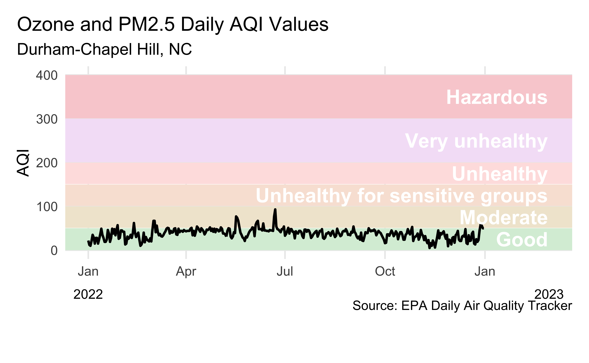

# load packages
library(countdown)
library(tidyverse)
library(janitor)
library(colorspace)
library(broom)
library(fs)
library(MoMAColors)
# set theme for ggplot2
ggplot2::theme_set(ggplot2::theme_minimal(base_size = 14))
# set figure parameters for knitr
knitr::opts_chunk$set(
fig.width = 7, # 7" width
fig.asp = 0.618, # the golden ratio
fig.retina = 3, # dpi multiplier for displaying HTML output on retina
fig.align = "center", # center align figures
dpi = 300 # higher dpi, sharper image
)Visualizing time series data - I
Lecture 5
Dr. Mine Çetinkaya-Rundel
Duke University
STA 313 - Spring 2024
Warm up
Announcements
HW 1 due at 5 pm today
Let me know any requests for Project 1 teams by tonight, start work on Project 1 proposal in lab tomorrow
Setup
From last time: Bringing together multiple data frames
Data
Visualizing joined data
The following plot displays some information from each of the three data frames:

Livecoding
Reveal below for code developed during live coding session.
Transform
scientists <- professions |>
left_join(dates) |>
left_join(works)
scientists_longer <- scientists |>
mutate(
birth_year = case_when(
name == "Ada Lovelace" ~ 1815,
name == "Marie Curie" ~ 1867,
TRUE ~ birth_year
),
death_year = case_when(
name == "Ada Lovelace" ~ 1852,
name == "Marie Curie" ~ 1934,
name == "Flossie Wong-Staal" ~ 2020,
TRUE ~ death_year
),
status = if_else(is.na(death_year), "alive", "deceased"),
death_year = if_else(is.na(death_year), 2021, death_year),
known_for = if_else(name == "Rosalind Franklin", "understanding of the molecular structures of DNA ", known_for)
) |>
pivot_longer(
cols = contains("year"),
names_to = "year_type",
values_to = "year"
) |>
mutate(death_year_fake = if_else(year == 2021, TRUE, FALSE))Plot
ggplot(scientists_longer,
aes(x = year, y = fct_reorder(name, as.numeric(factor(profession))), group = name, color = profession)) +
geom_point(aes(shape = death_year_fake), show.legend = FALSE) +
geom_line(aes(linetype = status), show.legend = FALSE) +
scale_shape_manual(values = c("circle", NA)) +
scale_linetype_manual(values = c("dashed", "solid")) +
scale_color_moma_d("Lupi") +
scale_x_continuous(expand = c(0.01, 0), breaks = seq(1820, 2020, 50)) +
geom_text(aes(y = name, label = known_for), x = 2030, show.legend = FALSE, hjust = 0) +
geom_text(aes(label = profession), x = 1809, y = Inf, hjust = 1, vjust = 1, show.legend = FALSE) +
coord_cartesian(clip = "off") +
labs(
x = "Year", y = NULL,
title = "10 women in science who changed the world",
caption = "Source: Discover magazine"
) +
facet_grid(profession ~ ., scales = "free_y", space = "free_y", switch = "x") +
theme(
plot.margin = unit(c(1, 24, 1, 5), "lines"),
plot.title.position = "plot",
plot.caption.position = "plot",
plot.caption = element_text(hjust = 2), # manual hack
strip.background = element_blank(),
strip.text = element_blank(),
axis.title.x = element_text(hjust = 0),
panel.background = element_rect(fill = "#f0f0f0", color = "white"),
panel.grid.major = element_line(color = "white", linewidth = 0.5)
)Working with dates
Air Quality Index
The AQI is the Environmental Protection Agency’s index for reporting air quality
Higher values of AQI indicate worse air quality

AQI levels
The previous graphic in tibble form, to be used later…
AQI data
Source: EPA’s Daily Air Quality Tracker
2016 - 2022 AQI (Ozone and PM2.5 combined) for Durham-Chapel Hill, NC core-based statistical area (CBSA), one file per year
2016 - 2022 AQI (Ozone and PM2.5 combined) for San Francisco-Oakland-Hayward, CA CBSA, one file per year
2022 Durham-Chapel Hill
- Load data
Clean variable names
First look
This plot looks quite bizarre. What might be going on?
Peek at data
# A tibble: 365 × 4
date aqi_value site_name site_id
<chr> <chr> <chr> <chr>
1 01/01/2022 22 Durham Armory 37-063-0015
2 01/02/2022 12 Durham Armory 37-063-0015
3 01/03/2022 10 Durham Armory 37-063-0015
4 01/04/2022 21 Durham Armory 37-063-0015
5 01/05/2022 35 Durham Armory 37-063-0015
6 01/06/2022 29 Durham Armory 37-063-0015
7 01/07/2022 15 Durham Armory 37-063-0015
8 01/08/2022 28 Durham Armory 37-063-0015
9 01/09/2022 28 Durham Armory 37-063-0015
10 01/10/2022 15 Durham Armory 37-063-0015
# ℹ 355 more rowsTransforming date
Using lubridate::mdy():
# A tibble: 365 × 11
date aqi_value main_pollutant site_name site_id source x20_year_high_2000_2019
<date> <chr> <chr> <chr> <chr> <chr> <dbl>
1 2022-01-01 22 PM2.5 Durham Armory 37-063-0015 AQS 111
2 2022-01-02 12 PM2.5 Durham Armory 37-063-0015 AQS 76
3 2022-01-03 10 PM2.5 Durham Armory 37-063-0015 AQS 66
4 2022-01-04 21 PM2.5 Durham Armory 37-063-0015 AQS 61
5 2022-01-05 35 PM2.5 Durham Armory 37-063-0015 AQS 83
6 2022-01-06 29 PM2.5 Durham Armory 37-063-0015 AQS 71
7 2022-01-07 15 PM2.5 Durham Armory 37-063-0015 AQS 75
8 2022-01-08 28 PM2.5 Durham Armory 37-063-0015 AQS 76
9 2022-01-09 28 PM2.5 Durham Armory 37-063-0015 AQS 57
10 2022-01-10 15 PM2.5 Durham Armory 37-063-0015 AQS 71
# ℹ 355 more rows
# ℹ 4 more variables: x20_year_low_2000_2019 <dbl>, x5_year_average_2015_2019 <dbl>,
# date_of_20_year_high <chr>, date_of_20_year_low <chr>Transforming AQI values
What does this warning mean?
# A tibble: 365 × 11
date aqi_value main_pollutant site_name site_id source x20_year_high_2000_2019
<chr> <dbl> <chr> <chr> <chr> <chr> <dbl>
1 01/01/2022 22 PM2.5 Durham Armory 37-063-0015 AQS 111
2 01/02/2022 12 PM2.5 Durham Armory 37-063-0015 AQS 76
3 01/03/2022 10 PM2.5 Durham Armory 37-063-0015 AQS 66
# ℹ 362 more rows
# ℹ 4 more variables: x20_year_low_2000_2019 <dbl>, x5_year_average_2015_2019 <dbl>,
# date_of_20_year_high <chr>, date_of_20_year_low <chr>Investigating AQI values
- Take a peek at distinct values of AQI
[1] "22" "12" "10" "21" "35" "29" "15" "28" "25" "36" "49" "19" "24" "46" "38" "48" "34" "47" "57"
[20] "26" "45" "42" "13" "31" "39" "62" "40" "30" "20" "18" "27" "67" "41" "56" "37" "32" "43" "51"
[39] "50" "44" "33" "54" "52" "77" "74" "53" "58" "64" "61" "93" "16" "17" "23" "5" "6" "." "9"
[58] "14" "59""."likely indicatesNA, and it’s causing the entire column to be read in as characters
Rewind, and start over
Rows: 365
Columns: 11
$ Date <chr> "01/01/2022", "01/02/2022", "01/03/2022", "01/04/2022", "01/0…
$ `AQI Value` <dbl> 22, 12, 10, 21, 35, 29, 15, 28, 28, 15, 25, 36, 49, 35, 28, 1…
$ `Main Pollutant` <chr> "PM2.5", "PM2.5", "PM2.5", "PM2.5", "PM2.5", "PM2.5", "PM2.5"…
$ `Site Name` <chr> "Durham Armory", "Durham Armory", "Durham Armory", "Durham Ar…
$ `Site ID` <chr> "37-063-0015", "37-063-0015", "37-063-0015", "37-063-0015", "…
$ Source <chr> "AQS", "AQS", "AQS", "AQS", "AQS", "AQS", "AQS", "AQS", "AQS"…
$ `20-year High (2000-2019)` <dbl> 111, 76, 66, 61, 83, 71, 75, 76, 57, 71, 81, 77, 62, 63, 68, …
$ `20-year Low (2000-2019)` <dbl> 10, 8, 14, 9, 8, 15, 18, 15, 19, 20, 14, 5, 16, 15, 0, 6, 2, …
$ `5-year Average (2015-2019)` <dbl> 39.2, 36.8, 38.2, 30.4, 26.0, 32.4, 37.0, 36.6, 35.0, 35.6, 4…
$ `Date of 20-year High` <chr> "01/01/2000", "01/02/2005", "01/03/2004", "01/04/2008", "01/0…
$ `Date of 20-year Low` <chr> "01/01/2007", "01/02/2012", "01/03/2012", "01/04/2007", "01/0…Data cleaning
# A tibble: 365 × 11
date aqi_value main_pollutant site_name site_id source x20_year_high_2000_2019
<date> <dbl> <chr> <chr> <chr> <chr> <dbl>
1 2022-01-01 22 PM2.5 Durham Armory 37-063-0015 AQS 111
2 2022-01-02 12 PM2.5 Durham Armory 37-063-0015 AQS 76
3 2022-01-03 10 PM2.5 Durham Armory 37-063-0015 AQS 66
4 2022-01-04 21 PM2.5 Durham Armory 37-063-0015 AQS 61
5 2022-01-05 35 PM2.5 Durham Armory 37-063-0015 AQS 83
6 2022-01-06 29 PM2.5 Durham Armory 37-063-0015 AQS 71
7 2022-01-07 15 PM2.5 Durham Armory 37-063-0015 AQS 75
8 2022-01-08 28 PM2.5 Durham Armory 37-063-0015 AQS 76
9 2022-01-09 28 PM2.5 Durham Armory 37-063-0015 AQS 57
10 2022-01-10 15 PM2.5 Durham Armory 37-063-0015 AQS 71
# ℹ 355 more rows
# ℹ 4 more variables: x20_year_low_2000_2019 <dbl>, x5_year_average_2015_2019 <dbl>,
# date_of_20_year_high <chr>, date_of_20_year_low <chr>Another look
How would you improve this visualization?
Visualizing Durham AQI
Recreate the following visualization.
